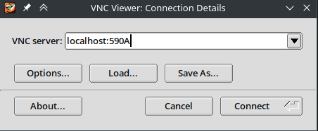

hyakvnc
hyakvnc
hyakvnc is a program to create and manage VNC sessions running within an Apptainer environment on a compute node.
hyakvnc script is ran from the login node and will interact with Slurm to spawn a compute node for interactive use.
Prerequisites
On the user’s computer, we will need the following: - SSH client with port-forwarding capabilities - VNC client or viewer to interact with the remote graphical interface - for all platforms, we recommend TigerVNC viewer: - macOS: https://sourceforge.net/projects/tigervnc/files/stable/1.13.1/TigerVNC-1.13.1.dmg - Windows (x86_64): https://sourceforge.net/projects/tigervnc/files/stable/1.13.1/vncviewer64-1.13.1.exe
TigerVNC viewer supports clipboard sharing and dynamically adjusts resolution upon changing window size.
VNC Apptainer
A VNC Apptainer hosts the graphical desktop interface, CLI/GUI tools, and libraries needed to run programs.
At a bare minimum for hyakvnc, this container must have the following: - TigerVNC server (with vncserver and vncpasswd) - a desktop environment (such as XFCE4)
For a more functional environment, we recommend installing additional tools and libraries as if it were your own computer.
A container can be maintained by individual users or entire groups.
Building a VNC Apptainer
Here, we will build a VNC Apptainer from https://github.com/uw-psych/hyak_vnc_apptainer. Feel free to make adjustments to these recipes as needed.
- From the login node, get an interactive node for 4 hours:
[NetID@klone-login01 ~]$ salloc -A <lab> -p <node_type> -c 4 --mem=8G --time=4:00:00- Clone the repository to a directory with around 4GB of free space:
cd some_place_with_space
git clone https://github.com/uw-psych/hyak_vnc_apptainer
cd hyak_vnc_apptainer- Load Apptainer module:
module load apptainer/1.1.5- Build
rockylinux8container by running the following:
make CONT_NAME=rockylinux8- Get the path to the container and xstartup:
realpath rockylinux8/rockylinux8.sif
realpath xfce4_config/xstartupInstalling hyakvnc
From the login node, run the following to install or upgrade hyakvnc:
python3.6 -m pip install --upgrade pip
python3.6 -m pip install git+https://github.com/uw-psych/hyakvncOnce installed, run hyakvnc -h to print usage help:
$ hyakvnc -h
usage: hyakvnc [-h] [-d] [-v] [-J <job_name>] {create,status,kill,kill-all,set-passwd,repair} ...
positional arguments:
{create,status,kill,kill-all,set-passwd,repair}
create Create VNC session
status Print details of all VNC jobs with given job name and exit
kill Kill specified job
kill-all Cancel all VNC jobs with given job name and exit
set-passwd Prompts for new VNC password and exit
repair Repair all missing/broken LoginNode<->SubNode port forwards, and then exit
optional arguments:
-h, --help show this help message and exit
-d, --debug Enable debug logging
-v, --version Print program version and exit
-J <job_name> Slurm job nameCheck usage help for a specific hyakvnc command by running hyakvnc <command> -h.
Creating a VNC session
VNC session cannot be reserved indefinitely and will terminate when its time expires.
If hyakvnc create fails to reserve a node and timesout, then check if you are reducing too many compute resources.
- From the login node shell, we will need to use
hyakvnc createcommand to start the VNC session with compute resources. As an example, to create a VNC session running on ourrockylinux8container on a compute node reserved for 10 hours with specified amount of compute resources, run the following:
hyakvnc create \
-A <lab> \
-p <node_type> \
--cpus 8 \
--gpus 0 \
--mem 32G \
--time 10 \
--container /path/to/hyak_vnc_apptainer/rockylinux8/rockylinux8.sif \
--xstartup /path/to/hyak_vnc_apptainer/xfce4_config/xstartupOn initial use, accept to create an SSH key and set a VNC password when prompted. If you want to reset your VNC password, run hyakvnc set-passwd from the login node.
- Create a port forward to Klone to access the VNC session.
If hyakvnc create was successful, it should print additional steps to setup a port forward and to connect to the VNC session.
...
=====================
Run the following in a new terminal window:
ssh -N -f -L 590A:127.0.0.1:590B UWNetID@klone.hyak.uw.edu
then connect to VNC session at localhost:590A
=====================In this example, we want to create a port forward to Klone with the source port 590A and destination at 127.0.0.1:590B or localhost:590B.
Create a new terminal window on your local computer and run the ssh command as instructed by hyakvnc create:
ssh -N -f -L 590A:127.0.0.1:590B UWNetID@klone.hyak.uw.eduPuTTY
- Instead of creating a new terminal window, right-click the title bar of an existing terminal window, then select Change Settings:

- Navigate to Connection->SSH->Tunnels. Set Source port to
590Aand Destination to127.0.0.1:590B.

- Click on Add to add the port forward, then click on Apply at the bottom of the window.
Closing all PuTTY terminal windows will close the port forward and break the VNC connection.
::: :::
- Open TigerVNC Viewer and connect to the VNC session at
localhost:590Aas instructed byhyakvnc create:

- Login with your VNC password:

If successful, you should be greeted to a graphical desktop interface.
Checking active VNC sessions
Running hyakvnc status from the login node will print details of active VNC sessions (with the same job name), including the following: - Slurm Job ID - Node hostname - Time left in days-hours:minutes:seconds - VNC status - VNC port forward command
Active hyakvnc jobs:
Job ID: AAAAAAAA
SubNode: n3301
Time left: 2-06:00:16
VNC active: True
VNC display number: 2
VNC port: 5902
Mapped LoginNode port: 5900
Run command: ssh -N -f -L 5900:127.0.0.1:5900 UWNetID@klone.hyak.uw.edu
Job ID: BBBBBBBB
SubNode: n3301
Time left: 2-01:24:25
VNC active: True
VNC display number: 1
VNC port: 5901
Mapped LoginNode port: 5911
Run command: ssh -N -f -L 5911:127.0.0.1:5911 UWNetID@klone.hyak.uw.edu
Job ID: CCCCCCCC
SubNode: g3071
Time left: 15:07:56
VNC active: True
VNC display number: 1
VNC port: 5901
Mapped LoginNode port: 5902
Run command: ssh -N -f -L 5902:127.0.0.1:5902 UWNetID@klone.hyak.uw.eduClosing VNC sessions
To close all VNC sessions, run hyakvnc kill-all from the login node.
To close a specific VNC session, find its Job ID with hyakvnc status, then run hyakvnc kill <job_ID> from the login node.
Using Lmod modules in VNC session
Requires the VNC apptainer to support Lmod. /sw/ must also be bounded to access existing module files.
If the VNC apptainer supports Lmod, then module command should work normally without throwing an error.
Using Apptainer module in VNC session
Requires the VNC apptainer to support Lmod and supply Apptainer dependencies.
Load apptainer module with a version specified (using default will not work unless apptainer is installed in the container):
module load apptainer/1.1.5Then apptainer commands will work normally:
Example:
apptainer shell <container.sif>
apptainer exec <container.sif> <command>with --nv flag for CUDA
To load a nested Apptainer within the VNC session with CUDA support, add the following arguments: --nv -B /.singularity.d.
Example:
apptainer shell --nv -B /.singularity.d <container.sif>References
https://github.com/uw-psych/hyakvnc